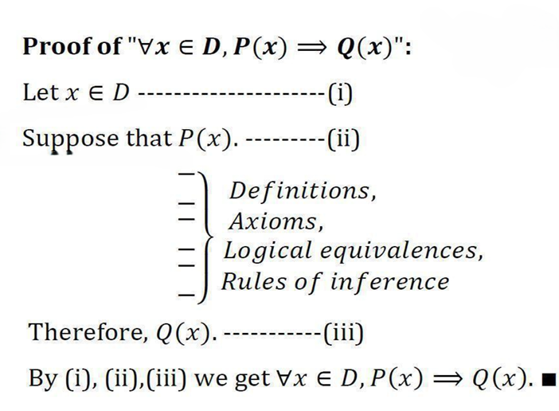
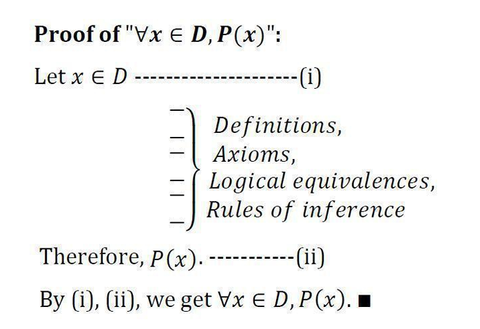
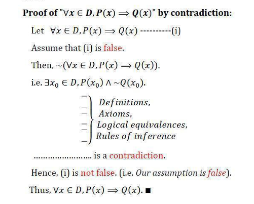

Chapter 3 Introduction to Proofs
3.0.1 Terminology
- Theorem: A statement that can be shown to be true (i.e., a fact or result).
- Proposition: A smaller or less important theorem.
- Axiom / Postulate: A statement assumed to be true.
- Lemma: A less important theorem used in the proof of another theorem.
- Corollary: A less important theorem that follows from a larger theorem.
- Conjecture: A statement proposed as true but not yet proven.
Note: A proof is a valid argument that establishes the truth of a theorem (or any statement that can be true or false).
Axioms and postulates do not require proof—they serve as foundational assumptions, akin to basic words in a dictionary that help define others.
3.1 Arguments
An argument is an assertion that a given set of propositions \(p_1, p_2, \ldots, p_n\), called premises, yields another proposition \(q\), called the conclusion.
This is denoted symbolically as: \[ p_1, p_2, \ldots, p_n \vdash q \]
The argument is said to be valid if \(q\) is true whenever all the premises \(p_1, p_2, \ldots, p_n\) are true.
An argument that is not valid is called a fallacy.
The argument \(p_1, p_2, \ldots, p_n \vdash q\) is valid if and only if the compound proposition: \[ (p_1 \land p_2 \land \ldots \land p_n) \Rightarrow q \] is a tautology.
Example 3.1 Let \(n \in \mathbb{N}\). Consider the following argument:
- \((-1)^n\) is positive or \((-1)^n\) is negative.
- If \((-1)^n\) is positive, then \((-1)^{2n} > 0\).
- If \((-1)^n\) is negative, then \((-1)^{2n} > 0\).
Therefore, \((-1)^{2n} > 0\).
Let:
- \(p\): \((-1)^n\) is positive
- \(q\): \((-1)^n\) is negative
- \(r\): \((-1)^{2n} > 0\)
We examine the validity of the argument: \[ \underbrace{(p \lor q)}_{Premise},\ \underbrace{(p \Rightarrow r)}_{Premise},\ \underbrace{(q \Rightarrow r)}_{Premise} \vdash \underbrace{r}_{Conclusion} \]
This corresponds to the compound proposition: \[ ((p \lor q) \land (p \Rightarrow r) \land (q \Rightarrow r)) \Rightarrow r \]
| \(p\) | \(q\) | \(r\) | \(p \lor q\) | \(p \Rightarrow r\) | \(q \Rightarrow r\) | \((p \lor q) \land (p \Rightarrow r) \land (q \Rightarrow r)\) | \(((p \lor q) \land (p \Rightarrow r) \land (q \Rightarrow r)) \Rightarrow r\) |
|---|---|---|---|---|---|---|---|
| T | T | T | T | T | T | T | T |
| F | T | T | T | T | T | T | T |
| T | F | T | T | T | T | T | T |
| F | F | T | F | T | T | F | T |
| T | T | F | T | F | F | F | F |
| T | F | F | T | F | T | F | F |
| F | T | F | T | T | F | F | F |
| F | F | F | F | T | T | F | T |
This table confirms that the compound proposition is not a tautology, hence the argument is not valid in all cases. However, in the specific example from Section 8.3, the premises are true and the conclusion follows, so the argument is valid in that instance, though not universally.
3.2 Valid Argument
By definition, a argument is valid if: > If the premises are true, then the conclusion is true.
This corresponds to the tautology: \[ ((p \Rightarrow q) \land p) \Rightarrow q \]
Example 3.2 Premises: 1. \(p \Rightarrow q\) 2. \(p\)
Conclusion: ∴ \(q\)
Example 3.3 Is the following argument valid?
Premises: 1. If the door is open, then I must close it. 2. The door is open.
Conclusion: ∴ I must close it.
Let:
- \(p\): The door is open
- \(q\): I must close it
This matches the form: \[ (p \Rightarrow q),\ p \vdash q \]
Since the compound proposition \(((p \Rightarrow q) \land p) \Rightarrow q\) is a tautology, the argument is valid.
We consider the argument:
\[ [(p \Rightarrow q) \land p] \Rightarrow q \]
This structure represents a valid argument, often referred to as a rule of inference.
3.2.0.1 Method 1: Truth Table
| \(p\) | \(q\) | \([(p \Rightarrow q) \land p] \Rightarrow q\) |
|---|---|---|
| T | T | T |
| T | F | T |
| F | T | T |
| F | F | T |
This confirms that the compound proposition is not always true, but when both premises are true, the conclusion follows — hence the argument is valid in that case.
3.2.0.2 Method 2: Direct Reasoning
If:
- \(p\) is true, and
- \(p \Rightarrow q\) is true,
Then:
- \(q\) must be true.
Remark. A logical rule of inference is defined to be any valid argument — that is, one where the conclusion necessarily follows from the premises.
- Modus Ponens This rule affirms the consequent based on a conditional and its antecedent: \[ \begin{array}{ll} p \Rightarrow q & \text{(premise 1)} \\ p & \text{(premise 2)} \\ \hline q & \text{(conclusion)} \end{array} \] If “p implies q” and “p” is true, then “q” must also be true.
Example 3.4 Claim:\(\sqrt{2} < \sqrt{3}\)
\[\begin{align} 2<3 & \implies 2-3<0\\ & \implies (\sqrt{2} - \sqrt{3})(\sqrt{2} + \sqrt{3})<0\\ &\implies (\sqrt{2} - \sqrt{3})<0\\ & \implies \sqrt{2} < \sqrt{3} \end{align}\]
- Modus Tollens This rule denies the antecedent based on a conditional and the negation of its consequent: \[ \begin{array}{ll} p \Rightarrow q & \text{(premise 1)} \\ \neg q & \text{(premise 2)} \\ \hline \neg p & \text{(conclusion)} \end{array} \] If “p implies q” and “q” is false, then “p” must also be false.
Example 3.5 Claim: \(\sqrt{2}+\sqrt{3}<\sqrt{11}\)
\[\begin{align} \sqrt{2}+\sqrt{3}\geq \sqrt{11} & \implies (\sqrt{2}+\sqrt{3})^2<(\sqrt{11}) \text{Since }\sqrt{2}+\sqrt{3}\geq 11>0\\ & \implies 2+2\sqrt{6}+3\geq 11\\ & \implies 5+2\sqrt{6}\geq 11\\ & \implies 2\sqrt{6}\geq 6\\ & \implies 4\times 6 \geq 36 \text{ Since } 4\times 6 \geq 36>0\\ \underbrace{\sqrt{2}+\sqrt{3}\geq \sqrt{11}}_p& \implies \underbrace{24 \geq 36}_q \text{ is true} \tag{3.1}\\\\ \text{But } 24 < 36 &\text{ is true}\\ \therefore 24 \geq 36 &\text{ is false}\\ \therefore \underbrace{\neg(24 \geq 36)}_{\neg q} &\text{ is true}\tag{3.2}\\ \therefore \neg p &\\ \text{ i.e. } \sqrt{2}+\sqrt{3}<\sqrt{11}& \end{align}\]
3.3 Mathematical proofs
There are several standard techniques used to establish mathematical theorems. Below are five commonly used methods:
- Direct proofs
- Proof by Contradiction
- Indirect proofs
- proof by cases
- Proof by Principle of Mathematical Induction
3.3.1 Direct proofs
Direct proof is probably the easiest approach to establish the theorems, as it does not require knowledge of any special techniques. The argument is constructed using a series of simple statements, where each one should follow directly from the previous one. It is important not to miss out any steps as this may lead to a gap in reasoning. To prove the hypothesis, one may use axioms, as well as the previously established statements of different theorems.
3.3.1.1 Proving Conditional Statements: \(p\implies q\)
If \(p\) is false, then the implication is always Thus, show that if \(p\) is true, then \(q\) is true.
Direct Proof: Assume that \(p\) is true. Use rules of inference, axioms, and logical equivalences to show that \(q\) must also be true.
Before we begin exploring example proofs, it’s essential to clearly define the foundational terms we’ll be using. Based on your notes and the image provided, here are the formal definitions:
Definition 3.1 (Even and Odd Integers)
- An integer \(n\) is even if there exists an integer \(k \in \mathbb{Z}\) such that: \[ n = 2k \]
- An integer \(n\) is odd if there exists an integer \(k \in \mathbb{Z}\) such that: \[ n = 2k + 1 \]
- Every integer is either even or odd, and no integer is both.
Example 3.6 \(5\) is odd integer and \(10\) is even integer.
- Since \(5=2\times 2 +1\)
- Since \(10=2\times 5\)
Definition 3.2 (Divisibility) A integer $b $ \(b\) divides another integer \(a\) if: \(\exists k \in \mathbb{Z} \text{ such that } a = k \cdot b\) ** Notation**: \(b\neq 0\) divides \(a\) , written \(b \mid a\))
In this case, \(b\) is called a factor or divisor of \(a\).
Example 3.7
- \(3 \mid 12\) because \(12 = 4 \cdot 3\)
- \(5 \nmid 12\) because there is no integer \(k\) such that \(12 = 5k\)
Example 3.8 Give a direct proof of the theorem “If \(n\) is an odd integer, then \(n^2\) is odd.”
Proof. Let \(n \in \mathbb{Z}\) be an odd integer.
By definition of oddness, there exists an integer \(k \in \mathbb{Z}\) such that:
\[
n = 2k + 1
\]
Now compute \(n^2\): \[ n^2 = (2k + 1)^2 = 4k^2 + 4k + 1 = 2(2k^2 + 2k) + 1 \]
Let \(m = 2k^2 + 2k \in \mathbb{Z}\). Then: \[ n^2 = 2m + 1 \]
Thus, \(n^2\) is of the form \(2m + 1\), which is odd.
Theorem 3.1 Let \(n\) and \(m\) be integers. Then
- if \(n\) and \(m\) are both even, then \(n + m\) is even,
- if \(n\) and \(m\) are both odd, then \(n + m\) is even,
- if one of \(n\) and \(m\) is even and the other is odd, then \(n + m\) is odd.
Claim 1: If \(n\) and \(m\) are both even, then \(n + m\) is even.
Proof. If \(n\) and \(m\) are even, then there exist integers \(a, b \in \mathbb{Z}\) such that: \[ n = 2a,\quad m = 2b \] Then: \[ n + m = 2a + 2b = 2(a + b) \] Since \(a + b \in \mathbb{Z}\), \(n + m\) is divisible by 2, hence even.
Claim 2: If \(n\) and \(m\) are both odd, then \(n + m\) is even.
Proof. If \(n\) and \(m\) are odd, then there exist integers \(a, b \in \mathbb{Z}\) such that: \[ n = 2a + 1,\quad m = 2b + 1 \] Then: \[ n + m = (2a + 1) + (2b + 1) = 2a + 2b + 2 = 2(a + b + 1) \] Since \(a + b + 1 \in \mathbb{Z}\), \(n + m\) is even.
Claim 3: If one of \(n\) and \(m\) is even and the other is odd, then \(n + m\) is odd.
Proof. Assume without loss of generality that \(n\) is even and \(m\) is odd.
Then there exist integers \(a, b \in \mathbb{Z}\) such that:
\[
n = 2a,\quad m = 2b + 1
\]
Then:
\[
n + m = 2a + (2b + 1) = 2(a + b) + 1
\]
Since \(a + b \in \mathbb{Z}\), \(n + m\) is of the form \(2k + 1\), hence odd.
Consider the following definitions
- A integer\(a \in \mathbb{Z}\). said to be Type 0: if there exist integr \(n\) such that \(a = 3n\).
- A integer\(a \in \mathbb{Z}\). said to be Type 1: if there exist integr \(n\) such that \(a = 3n+1\).
- A integer\(a \in \mathbb{Z}\). said to be Type 2: if there exist integr \(n\) such that \(a = 3n+2\).
- If \(a\) and \(b\) are both type 1 integers, then \(a + b\) is a type 2 integer.
Proof. Let \(a = 3m + 1\) and \(b = 3n + 1\) for some \(m, n \in \mathbb{Z}\).
Then:
\[
a + b = (3m + 1) + (3n + 1) = 3(m + n) + 2
\]
So \(a + b\) is of the form \(3k + 2\), hence type 2.
- If \(a\) and \(b\) are both type 2 integers, then \(a + b\) is a type 1 integer.
Proof. Let \(a = 3m + 2\) and \(b = 3n + 2\) for some \(m, n \in \mathbb{Z}\).
Then:
\[
a + b = (3m + 2) + (3n + 2) = 3(m + n) + 4 = 3(m + n + 1) + 1
\]
So \(a + b\) is of the form \(3k + 1\), hence type 1.
- If \(a\) is type 1 and \(b\) is type 2, then \(ab\) is type 2.
Proof. Let \(a = 3m + 1\), \(b = 3n + 2\) for some \(m, n \in \mathbb{Z}\).
Then:
\[
ab = (3m + 1)(3n + 2) = 9mn + 6m + 3n + 2 = 3(3mn + 2m + n) + 2
\]
So \(ab\) is of the form \(3k + 2\), hence type 2.
NOte:
- Many logical theorems take the form:
\[
\forall x (P(x) \Rightarrow Q(x))
\]
Choose an Arbitrary Element:
Let \(c\) be an arbitrary element from the domain.Prove the Implication for \(c\):
Show that \(P(c) \Rightarrow Q(c)\) holds.Apply Universal Generalization:
Since \(c\) was arbitrary, we conclude:
\[ \forall x (P(x) \Rightarrow Q(x)) \]Focus of the Proof:
The core task is to prove a statement of the form:
\[ p \Rightarrow q \]

::: {.example #unnamed-chunk-76}
Prove that for all $n , if \(n\) is even, then \(n^2\) is even.
i.e. Prove that ” \(\forall n \in \mathbb{N}, n\) is even is even.”
:::
Proof. Let \(n \in \mathbb{N}\).
Suppose \(n\) is even.
By definition of evenness, there exists an integer \(k \in \mathbb{N}\) such that:\(n = 2k\)
Now, \[ n^2 = (2k)^2 = 4k^2 = 2(2k^2) \]
Since \(2k^2 \in \mathbb{N}\), it follows that \(n^2\) is divisible by 2, hence even.

Example 3.9 Prove that \(x^2 + 6x + 10 > 0\), where \(x\) is a real number.
We need to proove that : \(\forall x \in \mathbb{R},x^2 + 6x + 10 > 0\)
Proof. Let \(x\in \mathbb{R}\).
First note that \(x^2 + 6x + 10 = (x + 3)^2 + 1\)
\[
\begin{align}
(x+3)^2 & \geq 0\\
(x+3)^2+1 & \geq 1>0
\end{align}
\]
Threfore, \(\forall x \in \mathbb{R},x^2 + 6x + 10 > 0\)
3.3.2 Proof by Contradiction
Given a statement \(p\), assume it is false.
Assume\(\neg p\).
Prove that \(\neg p\) leads to false.
A contradiction exists.
- Given a statement of the form \(p \implies q\). To assume it’s false, you only have to consider the case where \(p\) is true and \(q\) is false.

Claim: If \(n^2\) is even, then \(n\) is even.
Example 3.10 Prove: \(\forall x \in \mathbb{R}, x^2 + 6x + 10 > 0\)
Proof. Suppose that
begin{equation}
x , x^2 + 6x + 10 > 0 \tag{3.3}
\end{equation}
Assume that statement (3.3) is false.
\(x_0^2 + 6x_0 + 10 \leq 0\) for some \(x_0 \in \mathbb{R})\).
Now \(x_0^2 + 6x_0 + 10 =(x_0+3)^2+1\geq 1\).
Hence, \(0<1\leq 0\). This is a contradiction.
\(\therefore\) (3.3) is false.
\(\forall x \in \mathbb{R}, x^2 + 6x + 10 > 0\)
Exercise 3.1 Claim: If \(n = ab\), then \(a \leq \sqrt{n}\) or \(b \leq \sqrt{n}\), where \(a, b \in \mathbb{Z}^+\).
\(\exists x_0 \in \mathbb{R}\) such that \(x_0^2 + 6x_0 + 10 \leq 0\).
Exercise 3.2 Claim: \(\sqrt{2} \notin \mathbb{Q}\), where \(\mathbb{Q}=\left\{\frac{p}{q}:p,q \in \mathbb{Z}, q\neq 0\right\}\)
3.4 Indirect Proofs
Consider an implication:
\[ p \Rightarrow q \]
Its contrapositive is:
\[ \neg q \Rightarrow \neg p \]
This contrapositive is logically equivalent to the original implication.
Thus, to prove \(p \Rightarrow q\), we may instead prove \(\neg q \Rightarrow \neg p\).
To perform an indirect proof, carry out a direct proof on the contrapositive.
Example 3.11 Prove that: If \(x^2\) is even, then \(x\) is even.
Example 3.12 Prove that: If \((x - 2)^2 \neq 1\), then \(x \neq 3\)
3.5 Proof by Cases
Example 3.13 Let \(x\) be any integer. Then \(x^2 + x\) is even.
To prove: \(\exists x \in \mathbb{Z},\; P(x)\)
We exhibit a member of the universal set for which \(P(x)\) is true.
One example suffices.
Example 3.14 Show that:
\[ \exists x \in \mathbb{Z} \text{ such that } x^2 = 4 \]
Proof. Let \(x_0 = -2\). Then: - \(x_0 \in \mathbb{Z}\) - \(x_0^2 = (-2)^2 = 4\)
Thus, \(\exists x_0 \in \mathbb{Z},\quad x_0^2 = 4\)
3.6 Proof by Principle of Mathematical Induction
3.6.1 Principle of Mathematical Induction
Let \(P(n)\) be a statement defined for each positive integer \(n \in \mathbb{N}\).
To prove that \(P(n)\) is true for all \(n \in \mathbb{N}\), it suffices to show:
Base Case:
\(P(1)\) is true.Inductive Step:
For every \(k \in \mathbb{N}\), if \(P(k)\) is true, then \(P(k+1)\) is also true.
That is: \[ \forall k \in \mathbb{N},\; P(k) \Rightarrow P(k+1)\]Conclusion: If both the base case and the inductive step are established, then: \[ \forall n \in \mathbb{N},\; P(n) \text{ is true} \]
This is the foundation for proving propositions over the natural numbers.
Example 3.15 Prove by induction that
\[
1 + 2 + 3 + \cdots + n = \frac{n(n+1)}{2}
\quad \text{for all } n \in \mathbb{N}.
\]
Example 3.16 Prove by induction that
\[
n^3 + 2n \text{ is divisible by } 3
\quad \text{for all } n \in \mathbb{N}.
\]
3.7 Exercises
Exercise 3.3 Prove by induction that
\[
2^{n+1} > n^2
\quad \text{for all } n \in \mathbb{N}.
\]
Exercise 3.4 Let the sequence \((a_n)\) be defined recursively by
\[
a_1 = \sqrt{2}, \quad a_{n+1} = \sqrt{2 + a_n}, \quad \text{for all } n \in \mathbb{N}.
\]
Prove the following properties:
- \(a_n > 0\) for all \(n \in \mathbb{N}\).
- \(a_n \leq 2\) for all \(n \in \mathbb{N}\).
- \(a_{n+1} \geq a_n\) for all \(n \in \mathbb{N}\).